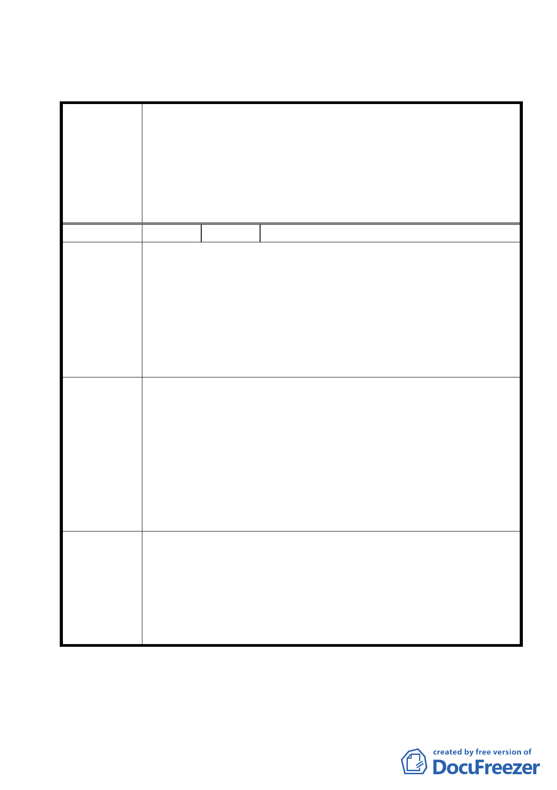

臺北市都市計畫委員會公民或團體所提意見綜理表
修訂「變更台北市內湖區金湖路東側機關用地（供台北市汽車駕
駛訓練中心使用）、第二種住宅區、第三種住宅區、道路用地、停
案 名 車場用地及公園用地為機關用地（供美國在台協會台北辦事處
【AIT/T】使用）、國中用地、公園用地及道路用地計畫案」有關
都市設計管制要點部分規定案
編
號１
陳情人 陳里長東源等三人
金湖國中預定地與美國在台辦事處預定地間之人行步道，原定寬
度八米，惟五月二十五日說明會中，辦事處有意縮窄，使原有八
陳情理由
公尺之寬度大幅縮減為四公尺，若依此，將大幅減少兩基地間重
要通道疏散人潮之效率與通行空間，勢必使附近使用該通道之國
中師生、家長、通行兩地間之里民，減少平日通行與災情發生時
疏散之迅速性與安全性，十分不妥。
辦事處之基地面積幅員遼闊，故請維持該人行通道當初設計之意
旨，考量通道兩端大湖、秀湖、紫雲、清白各里日後更新住宅激
增逾萬戶遷入人口之通道迫切需求，並顧及國中生上下課與家長
建 議 辦 法 通行聯繫之便利性與萬一災情發生時消防與疏散人潮之空間需
求，使本重要通路維持原案最基本之八米路寬，以免日後產生公
共安全與用路空間不足之問題，影響貴委員會與美國在台辦事處
與地方相處之和諧與愉快。
本案基於維持行人、消防車之通行及校園安全考量，請發展局、
委 員會決 議 教育局沿本案國中用地北側另行規劃一替代通路，並取消原計畫
中「國中用地與機關用地間應自基地境界線各退縮四公尺之無遮
簷人行道」乙項之規定。
第 5 頁，共 7 頁